Technology
Computer Science, programming, Flutter, web development, databases, Power BI, and building projects that actually do something.
THE SECRET LIFE OF
A little window into the person behind the code, games, stories, late-night questions, and everyday life.
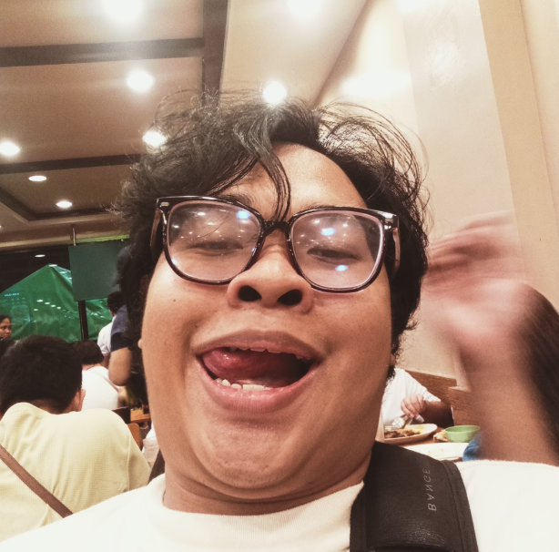
THE PERSON
I'm John Clarence, a 21-year-old Computer Science student who likes building things, getting lost in good stories, and asking way too many questions when something doesn't make sense.
I'm generally quiet around people I don't know, but once I'm comfortable, I'm much more expressive, playful, and talkative. I value genuine friendships, loyalty, meaningful conversations, and people who are comfortable being themselves.
This page is meant to be a small, honest introduction — the things I enjoy, the stories that stayed with me, the stuff I'm learning, and a few pieces of the person behind the screen.
THE INTERESTS
Computer Science, programming, Flutter, web development, databases, Power BI, and building projects that actually do something.
Open worlds, memorable characters, exploration, realistic settings, and campaigns that make me forget how long I've been playing.
Movies and series that leave something behind — a thought, a feeling, a character, or a question I keep thinking about.
A Metro Manila commuter-navigation project focused on helping people understand routes, transfers, fares, and travel options.
I like digging into how systems work. If an explanation has a missing piece, chances are I'll notice and ask about it.
I'm naturally more comfortable in smaller circles. I value close friendships and conversations where nobody has to pretend.
THE PERSONALITY
I tend to observe first and open up later. With strangers, I can be reserved. With people I trust, I can become surprisingly expressive.
I care a lot about how people feel, but I also like things to make logical sense. That combination probably explains why I can spend an absurd amount of time thinking about both a technical problem and a tiny interaction from earlier in the day.
THE ARCHIVE

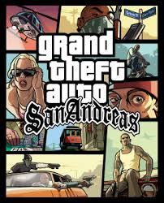
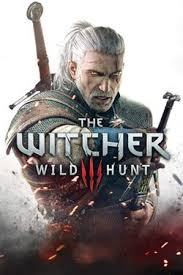
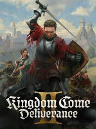
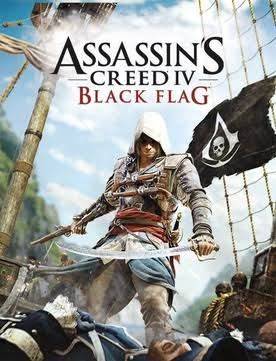
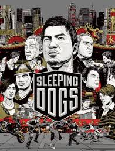
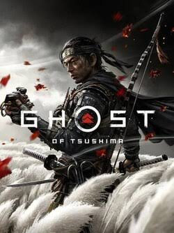
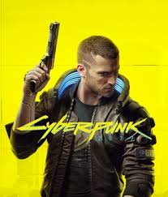
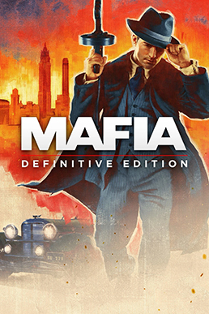
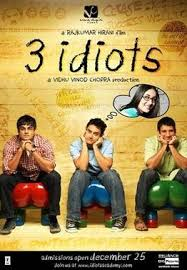
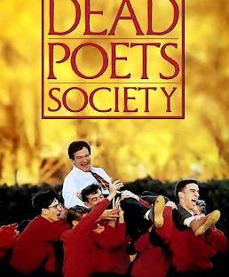

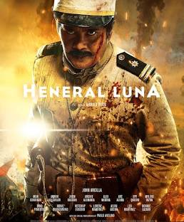
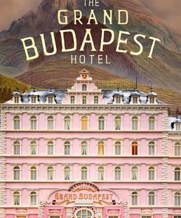
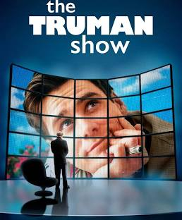
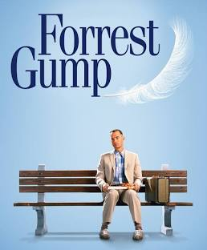
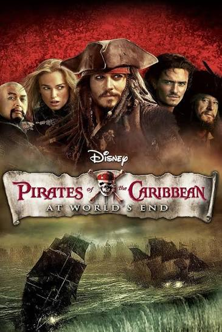
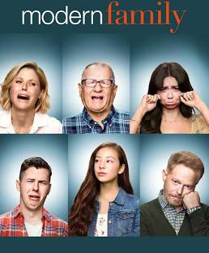
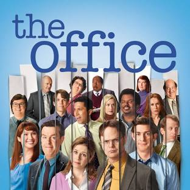
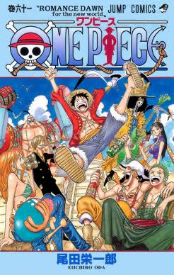
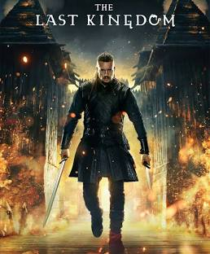
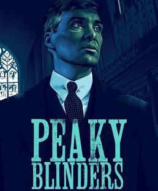
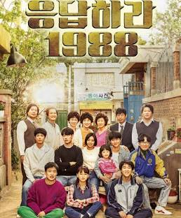
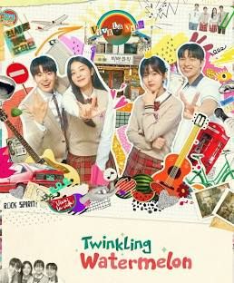

Anime is also part of the wider circle of stories around me. Titles I've discussed include Wotakoi, Komi Can't Communicate, Kaguya-sama: Love Is War, Toradora!, My Sweet Tyrant, and The Pet Girl of Sakurasou. Some of these were shared with me in the context of someone else's favorites, so I don't want to pretend they are all my personal favorites.
NEXT PERSONAL MILESTONE
February 1, 2027
THE OPEN DOOR
I'm making this page as a way to be a little more transparent with acquaintances and friends. If we've met, feel free to say hi.